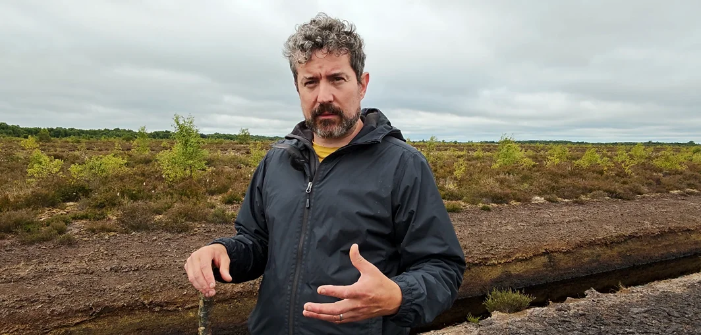
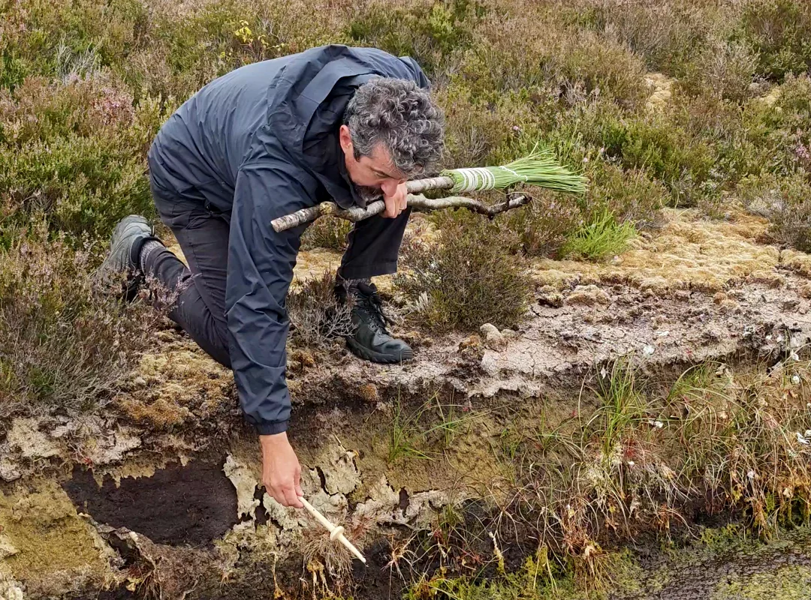
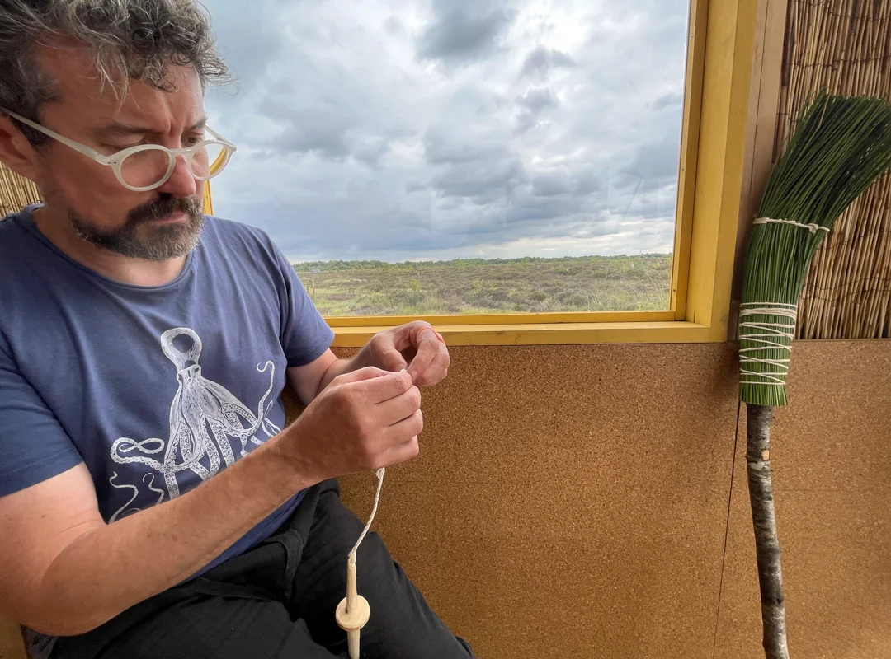
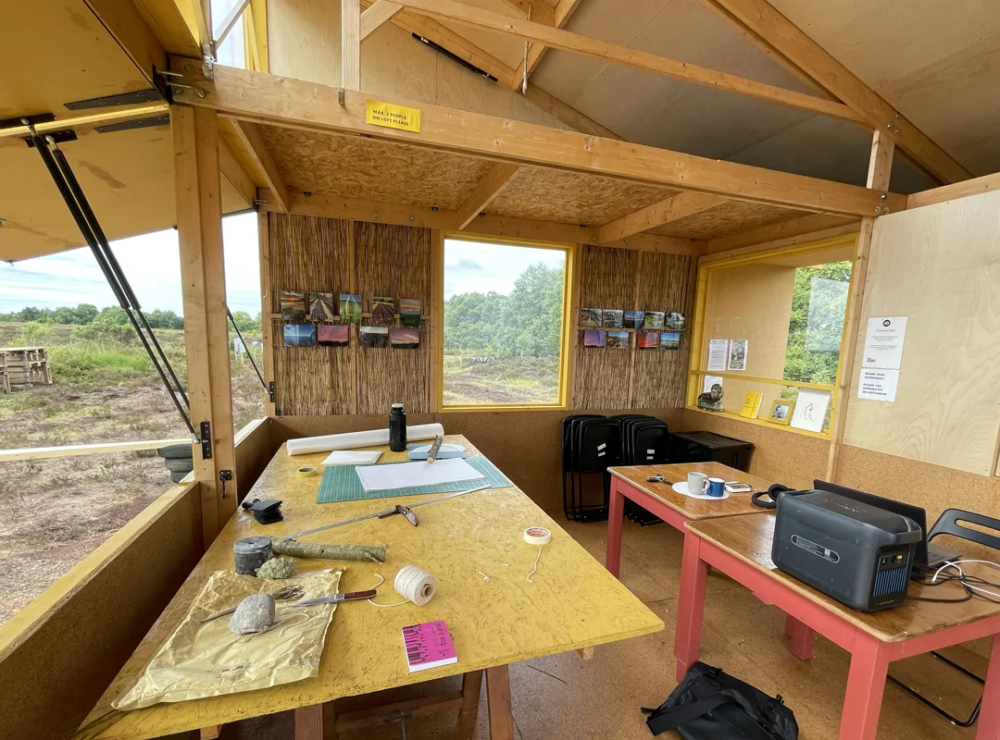

Clyde Doyle

Clyde Doyle is a designer, researcher and lecturer at the Institute of Art, Design + Technology (IADT), Dún Laoghaire. He teaches across undergraduate and postgraduate programmes, including the BA in Design for Film, MA in Design for Change and Certificate in Critical Design Philosophies, and is co-chair of the MA in Design for Change.
As co-founder and principal investigator of IADT’s Public Design Lab, Clyde leads interdisciplinary projects focused on design for social and environmental good. His research spans ecological design, sustainability transitions, critical and speculative design, ecoliteracy and more-than-human methods. He is currently undertaking a PhD in Design at the National College of Art and Design.
During his week-long Bog Bothy residency at Cornafulla, Clyde used making, observation and conversation as ways of engaging with the bog landscape. He spoke with people who visited the Bothy and took part in workshops and talks across the programme. Working with materials connected to the place, he hand-carved a drop spindle to spin raw bog cotton and sheep’s wool, and made a besom from an ash branch and green reeds. He also camped beside the Bothy, allowing time for close observation and direct contact with the landscape across the day and night.
At the end of the residency, Clyde performed an action in which the objects he had made were buried or submerged in a sphagnum-filled drain. The gesture invited reflection on the bog’s capacity to absorb and preserve material, the slow growth of sphagnum, the traces of human presence within peat, and the different timescales through which landscapes and handmade objects endure.
Residency


